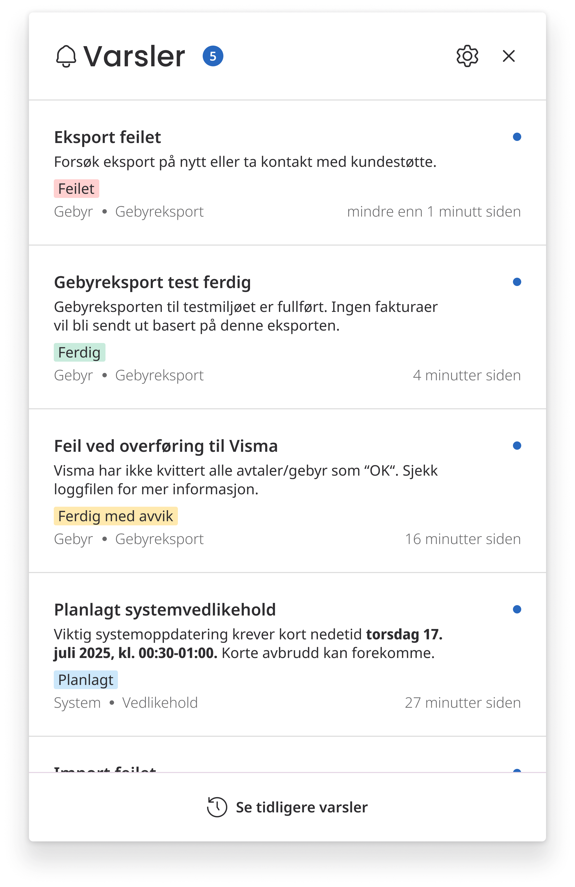
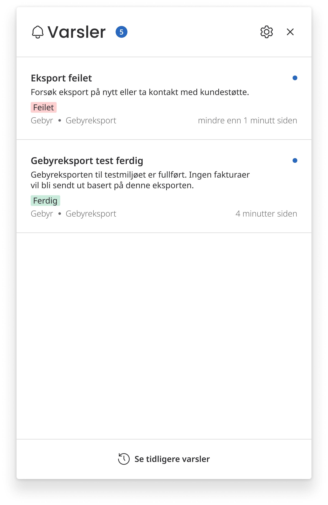
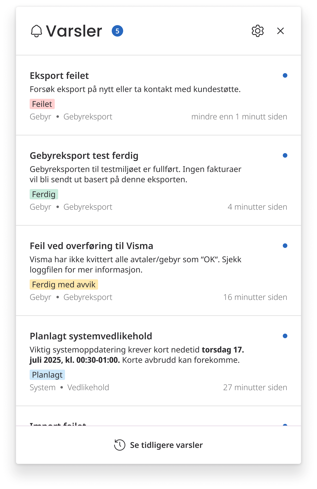
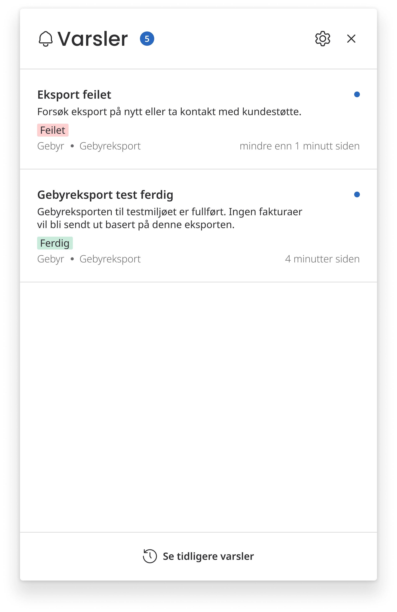
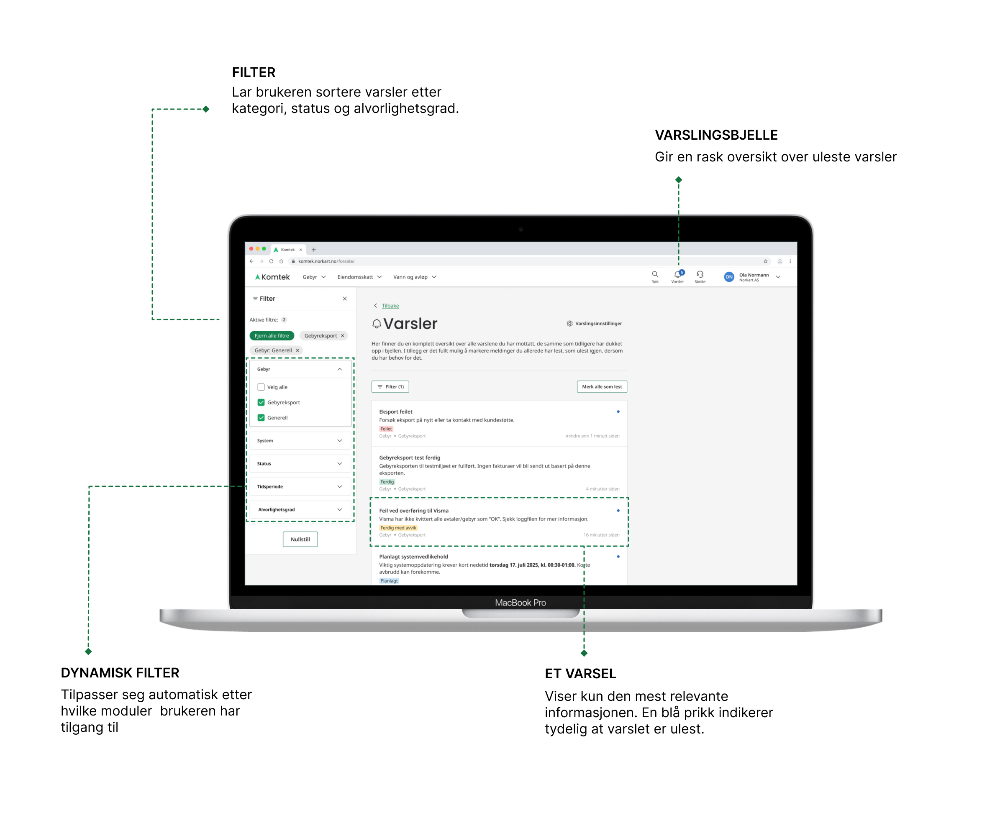
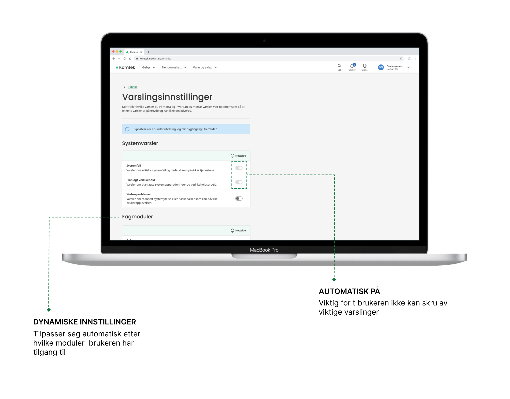

Om prosjektet
På Norkart-kontoret i Lillehammer jobbet vi med å utvikle et varslingssenter i Komtek, Norkarts plattform for kommunaltekniske tjenester. Målet var å skape en løsning som ga saksbehandlere bedre oversikt over arbeidsoppgaver og relevante varsler, samtidig som brukeropplevelsen var intuitiv og enkel å navigere.
Teamet og min rolle
Tre utviklere og meg som designer.
Tidsramme
6 uker
Verktøy
Figma, Miro, Google Workspace
Designprosessen
Jeg hadde hovedansvaret for design og brukeropplevelse gjennom prosjektet. Prosessen startet med å samle innsikt gjennom workshops, intervjuer og møter med produkteiere og designere. Jeg kartla brukernes behov og identifiserte utfordringene i den eksisterende løsningen, og gjorde brukertesting og A/B-testing for å hjelpe meg å validere og forbedre løsningene underveis. Jeg utviklet også personas for å konkretisere målgruppene og sikre at designet møtte faktiske behov.
Designet inkluderte et sentralt varslingssenter som samlet alle varsler på ett sted, med fokus på tydelighet, universell utforming og enkel navigasjon. Vi tok i bruk visuelle hierarkier, fargebruk og interaktive elementer for å sikre rask forståelse og effektiv bruk.
Metoder og verktøy
En metode jeg spesielt vil trekke frem, er mulighetstreet. Dette var en tilnærming jeg lærte i prosjektet, og som passet meg godt fordi jeg er en visuell person. Å kunne se en oversikt over ulike løsninger, smertepunkter og behov gjorde det enklere å vurdere hvilke tiltak som hadde størst nytte. Samtidig ga det en god mulighet til å kombinere flere ideer for å skape et enda bedre produkt.
I prosjektet brukte jeg både Miro og Figma som verktøy. Miro benyttet vi til samarbeid, planlegging og å samle innsikt. Figma brukte jeg til design og prototyping. I begynnelsen måtte jeg gjøre meg kjent med Norkarts eksisterende designsystem, og jeg endte underveis opp med å lage egne komponenter som allerede eksisterte, fordi jeg ikke hadde full oversikt. Dette ga meg likevel verdifull læring og hjalp meg å forstå systemets struktur bedre.
Norkart har et solid designsystem, slik at mange løsninger kunne settes sammen ved å tilpasse eksisterende elementer. Gjennom arbeidet utviklet jeg ferdigheter i effektiv bruk av Auto Layout og i å lage egne komponenter som kan tilpasses ulike behov, noe som styrket både designflyt og fleksibilitet i arbeidet.
Løsningen
Løsningen vår er en bjelle i menyen som åpner et responsivt popup-vindu med varsler som er relevante for deg. Når du klikker på et varsel, blir du sendt videre til den tilhørende siden, og varselet fjernes automatisk fra popupen. Brukerne mottar kun varsler knyttet til de arbeidsområdene de jobber innen, og slipper dermed meldinger som ikke er relevante for dem.
 



Det er også mulig å se en full oversikt over alle varsler, samt markere varsler som ulest. Da vises de på nytt i popupen. På denne måten kan brukerne behandle varslene som en slags arbeidsliste.
I tillegg kan brukerne tilpasse hvilke typer varsler de ønsker å motta og hvordan de mottar dem. Enkelte varsler er påkrevd, for eksempel systemfeil.
Hva har jeg lært fra dette prosjektet
Gjennom dette prosjektet har jeg fått mye verdifull erfaring som designer. Noen av de viktigste lærdommene er:
- Betydningen av brukersentrert design og kontinuerlig testing.
- Å balansere estetikk og funksjonalitet i praksis.
- Viktigheten av samarbeid i et tverrfaglig team.
- Å designe inkluderende løsninger med fokus på universell utforming.
Underveis støtte vi på noen eksterne utfordringer, som at vi ikke kunne implementere e-postfunksjonalitet slik vi hadde planlagt/ønsket. Jeg laget en midlertidig «sommerløsning» som kunne fungere i praksis, samtidig som jeg utviklet et forslag til en mer robust versjon for videreutvikling. Jeg fikk også mulighet til å bidra med å lage ikoner vi manglet i Figma.
Jeg hadde prøvd å vurdert universell utforming gjennom hele prosjektet, men lærte viktigheten av å tenke på hvordan interaksjoner fungerer på ulike skjermtyper først mot slutten. Vi hadde en hover-funksjon for å markere elementer som ulest eller lest, og da jeg skulle tilpasse dette for både touch- og ikke-touch-enheter, innså jeg hvor viktig det er å lage løsninger som fungerer på tvers av plattformer. Dette ga meg verdifull innsikt i å designe interaksjoner som er tilgjengelige og brukervennlige for alle.
Jeg fikk også erfaring med å tenke på små, men viktige scenarioer, som hva slags tekst som skal vises når en bruker ikke har noen filtreringer. Her fikk jeg god hjelp fra frontend-utvikleren, som gjennom sitt arbeid med koden stilte spørsmål og satte rammer jeg ikke hadde tenkt på selv. Hun kom med gode innspill rundt filtreringsløsningen, og gjennom samarbeid fant vi en løsning som ble bedre enn den jeg opprinnelig hadde sett for meg.
Alt i alt har jeg lært utrolig mye i dette prosjektet, både om designprosessen, samarbeid og hvordan man løser konkrete utfordringer i praksis. Jeg fikk masse erfaring som jeg kan ta med meg videre, og det var svært givende å jobbe i et tverrfaglig team. Ved å sitte sammen, snakke ofte, sparre og teste ideer kontinuerlig, kunne vi utvikle bedre løsninger raskt. Prosjektet har gitt meg en dypere forståelse av hvordan teori fra studiene kan overføres til praksis.